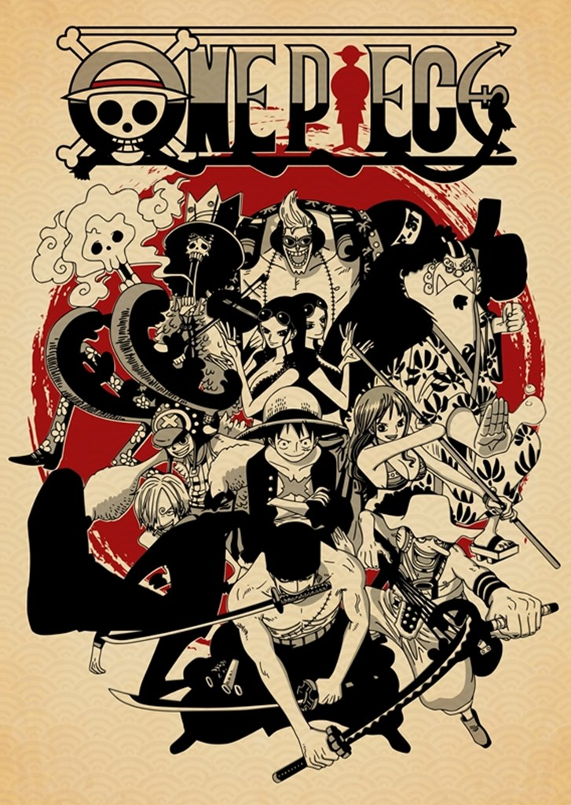

"One Piece" is a wildly popular Japanese manga and anime series created by Eiichiro Oda. It follows the adventures of Monkey D. Luffy and his pirate crew, known as the Straw Hat Pirates, as they search for the ultimate treasure known as "One Piece" in order to become the Pirate King.
The story begins with Luffy, a young boy inspired by the legendary pirate, "Red-Haired" Shanks, who saved his life and gave him his treasured straw hat. Luffy's dream is to find the One Piece and become the Pirate King, the ruler of the seas. To achieve this, he sets out on a journey across the Grand Line, the most dangerous and unpredictable sea in the world.
As the series progresses, Luffy gathers a diverse crew of individuals with their own dreams and goals, including Zoro, a master swordsman aiming to become the world's greatest swordsman; Nami, a skilled navigator seeking to map the entire world; Usopp, a sharpshooter with dreams of becoming a brave warrior of the sea; Sanji, a passionate cook aspiring to find the All Blue, a legendary sea where all fish gather; Chopper, a reindeer doctor who wants to cure any disease; Robin, an archaeologist in search of the history of the world; Franky, a cyborg shipwright with a dream of sailing aboard the legendary ship, the Thousand Sunny; Brook, a living skeleton musician seeking to fulfill his promise to a beloved friend; and Jinbe, a fish-man warrior and former Warlord of the Sea.
The world of "One Piece" is richly detailed and filled with unique characters, fantastical creatures, and mysterious islands. The series explores themes of friendship, loyalty, freedom, and the pursuit of one's dreams amidst a backdrop of adventure and peril.
Throughout their journey, the Straw Hat Pirates encounter powerful enemies, including other pirate crews, government agents, and mythical beings. They face off against the notorious World Government, the oppressive organization that governs the seas, as well as the enigmatic Yonko, the four most powerful pirates in the world.
"One Piece" is known for its intricate plotlines, intricate world-building, and emotional depth. It seamlessly blends action, humor, drama, and suspense, captivating audiences of all ages around the globe. With its compelling characters and epic storytelling, "One Piece" has become one of the most beloved and enduring manga and anime series of all time.
